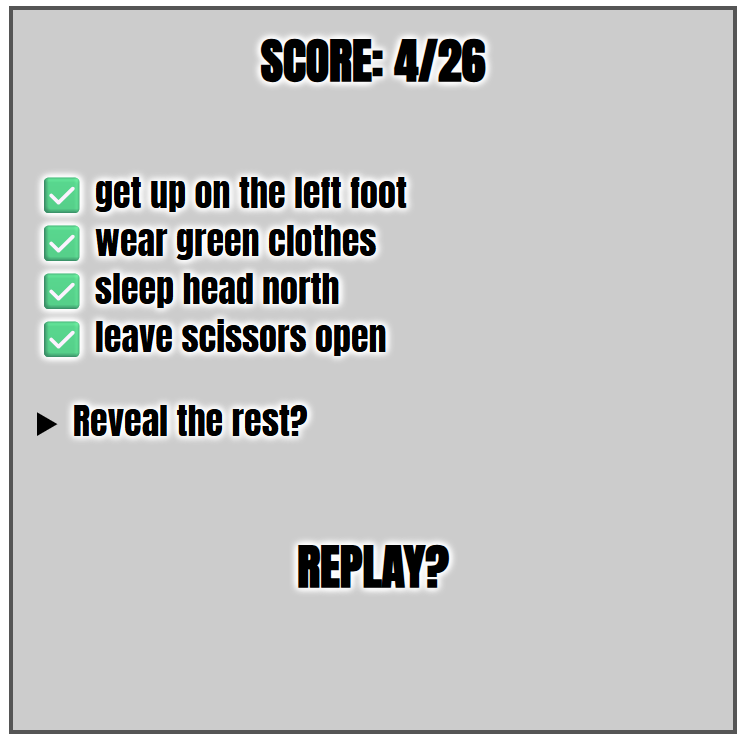
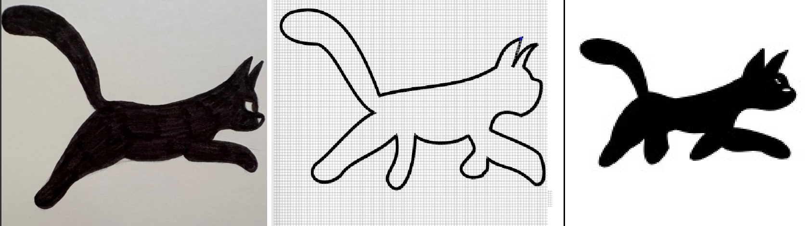
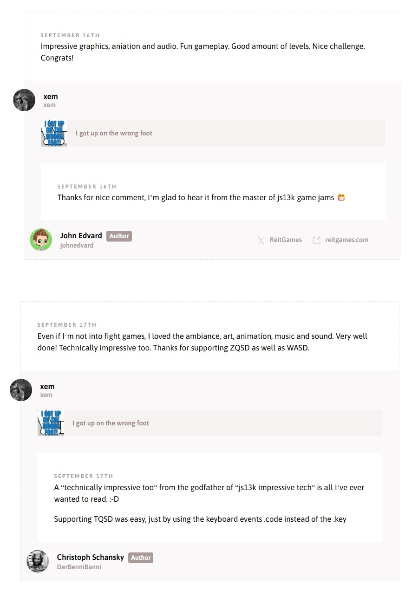
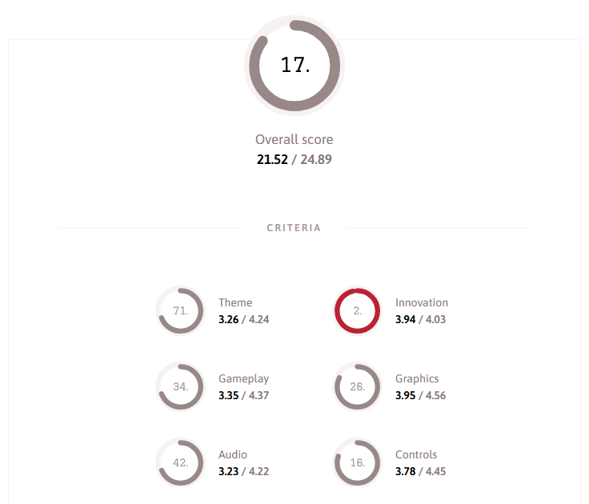

JS13k'25: I GOT UP ON THE WRONG FOOT!
August-September 2025

TL;DR
- My game is playable HERE
- Source code is available HERE
- It was ranked 17 / 176 (and 12 / 73 on Mobile) !
- You can see a playthrough video here (spoilers!):
Introduction
Hello and welcome to this new edition of JS13kGames!
This year the theme was BLACK CAT, and I didn't approach the competition like the previous years:
First, I've had a busy (and pleasant 💙) summer, so I haven't really started working on my entry until August 21, one week after the beginning of the jam.
Besides that, this year's theme didn't really inspire me any game idea, or more precisely, nothing that I found fun enough.
I spent two full weeks wondering what I could create, or if I'd actually create something this year. I even asked repeatedly to my friends and various AI's what I could do, but nothing really clicked for me.
One AI suggested a game about Schrödinger's cat, that could switch between states (like alive/dead) to solve puzzles. That's definitely a game I'd like to play, but as a game dev, I wasn't inspired enough to build it myself.
For inspiration, my dear Séverine drew these concept arts of black cats on paper, which helped me a lot when I ended up adding the black cat in my game!

August 13-20: brainstorming
While the days were passing, I ended up considering to make a game about making superstitions come true to have bad luck. Extensive online searches (and a bit of AI) helped me gather a long list of events that were considered bad luck in multiple different countries (to avoid having hyper specific beliefs only existing in Paraguay for example).
Here's the list I ended up with (mix of vaious french and english sources, so son't be surprised if it contains duplicates):
Click to expand
I remarked that a lot of these things could somehow happen in a single day and a single place (like a small house with a garden).
So I picked my 40 favourite items and imagined a little scenario where a man would get up on the wrong foot (in french we say "on the left foot"), and started a game where he has an entire day to be as unlucky as possible.
I scribbled my list, a quick intro storyboard and a plan of the house on my old and faithful notepad:

If you've already played the game, you can see how most of the final game was already present in this very early draft.
What you can also see is an ambitious art direction, where the camera sees everything from above, like a menacing presence over the hero's head.
And it's a good thing: I really want this year's entry to include things that I've never done before, or even things that were never seen before in any js13k entry... like a real day-night cycle, weather events, or an absurd amount of SVG graphics. I want it to be innovative, impressive and challenging (I mean, challenging for me, to make).
August 21-31: Scene layout
Speaking of ambitious point of view, I decided to use my (also faithful) CSS3DFramework to create a big scene containing a house with 4 rooms, a garden and a toolshed, entirely using CSS3D planes and cubes. I stripped all the other shapes and features from the framework to make it use as little space as possible (~2kb minified, see source code here), omitted the top side of the cubes to be able to see each room's interior from above, and added a bit of CSS to let each side of the cube be colored in a slightly different shade of grey.
Bedroom:

Looks nice, especially the black wall corners getting thicker when they approach the camera, which is not super easy to achieve in 2D, and comes for free here.
Whole world:

It seems to work well so far, and doesn't use too much space too: 1.5kb zipped! Let's continue...
I wondered a bit how to fill my room with various objects, objects that i'd like to draw in SVG with my (still faithful) tool MiniSVGCreator. Some are on the floor, some are on walls. All of them must be seen with a zenithal perspective. The ony viable solution I could find to not have weird shape overlaps was to put my objects on a separate layer, above the cubes, and to draw and position them in a way that make them look like they are in the room.
Bedroom draft with 3 SVGs

At this moment, I decided to make a (mostly) monochrome game, to enhance the gloomy "unlucky" atmosphere (and not waste time and bytes choosing a color palette for everything, too).
Elliot (on Slack) explained me how I could fix my perspective

Thanks bro! Even though both our aproaches are equivalent as long as the camera is perfectly centered in the room, you are the only one who pointed the perspective issues in my screenshots.
Bedroom with more (draft) SVGs

Some things (window, doors, bed) look better than others (chair, cupbard).
Bathroom draft

It's surprisingly uneasy to draw a convincing shower from above. Toilet and sink are challenging too.
Living room draft

Here you can see a small fan on the floor. I intended to have it in the game initially ("sleeping with a fan on" brings bad luck) but it got scraped because it would have been too complicated to animate. Also, I was too lazy to implement all the code required to take it, bring it to the bedroom, plug it on a wall, and turn it on. I had better things to do! Also, the chairs and couch look weird here due to a bad perspective and incomplete SVG paths, but I will redraw them better.
Kitchen draft

Almost nothing changed between this image and the final game, yay!
Garden draft

The challenge here is to draw a tree from above.
Here's a screenshot of when I was drawing an item (broom facing down) in my editor. The text highlighted in blue is the SVG output. Raw SVG sizes range from 170 bytes (door) to 470 bytes (cupboard) depending on their complexity.

Without any interactivity, this early version of the game's world weighs 4.7kb zipped. It's a chance that SVG graphics compress very well, because I want to include as many as possible! (probably around 60). Here's a glimpse of the code I wrote to draw the kitchen with my CSS3DFramework (full file HERE)
// kitchen
C.cube({x:-100,y:-100,z:70,w:300,h:300,d:300,b:"#ddd",css:"cube"});
// doors
C.plane({w:51,h:51,x:-209,y:360,z:300,rz:-90,html:svg.door,css:"living room door",n:"lrd2"});
C.plane({w:51,h:51,x:-109,y:215,z:300,sx:-1,html:svg.door,css:"bathroom door"});
// fridge
C.plane({w:56,h:77,x:-190,y:230,z:300,html:svg.fridge,css:"fridge"});
// plane/cupboard
C.plane({w:53,h:100,x:-21+3,y:365,z:300,rz:180,sx:1.2,html:svg.plane,css:"cupboard",n:"plane"});
// bread
C.plane({w:18,h:40,x:-37,y:400,z:300,rz:180,html:svg.bread,css:"bread hidden",n:"bread"});
// sink
C.plane({w:50,h:100,x:-20+3,y:237,z:300,rz:180,sx:1.3,html:svg.sink,css:"sink"});
// broom
C.plane({w:19,h:50,x:-185,y:310,z:330,rz:-90,html:svg.broom,css:"broom",n:"broom"});
// knives
C.plane({w:12,h:29,x:-23,y:260,z:300,rz:30,html:svg.knive,css:"knive",n:"knive1"});
C.plane({w:12,h:29,x:-15,y:297,z:300,rz:100,html:svg.knive,css:"knive",n:"knive2"});
C.plane({w:12,h:29,x:-15,y:297,z:300,rz:30,html:svg.knive,css:"knive hidden",n:"knive3"});
// oven
C.plane({w:55,h:65,x:-32+3,y:330,z:340,rz:180,html:svg.oven,css:"oven"});
// Hanger
C.plane({w:8,h:11,x:-120,y:470,z:300,rz:180,html:svg.hanger,css:"hanger",n:"hanger3"});
// mirror
C.plane({w:29,h:46,x:-120,y:435,z:300,rz:180,sy:.7,html:svg.mirror,css:"mirror",n:"mirror1"});
// Horseshoe
C.plane({w:50,h:50,x:-117,y:449,z:300,rz:180,sy:.7,html:svg.horseshoe,css:"horseshoe hidden",n:"horseshoe2"});
The organization of my code here is very similar to the one I used in CASTLE ESCAPE two years ago: use plain english css classes like "sink" or "mirror" (which will help me write each object's name when the mouse hovers it: I will simply display their css class), the "hidden" class makes an object invisible (like the horseshoe, which is turned visible if the player decides to hang it in the kitchen).
I also had a bad surprise when I tried my prototype on Firefox: everything looked super blurry!

But I realized it was only the case when the page was un-zoomed. At 100% it was not great, but good enough. And I'm already late so I won't lose extra time trying to fix a well-known Firefox bug (it's the only browser that rasterizes SVGs when they have CSS transforms applied to them... and my SVGs are so tiny (99x99px) that the rastering becomes very visible when they are scaled up, hence the blur).
September 1-7: interactivity
Two weeks after the beginning of the jam, I finally started to code my first interactions, starting with the hover effects (to show the name of every object plus walls and floor), and some easy click interactions (rotate bed, open window, open cupboard). Of course, each piece of furniture that has two states (like "open" and "closed") requires two distinct SVG graphics, so I drew them little by little too.
Aaaand it's Webkit's turn to become buggy. Not a display bug, but a hover bug. For some reason, the upper half of east and west walls don't trigger mouseover/mousemove events, so in Chrome, Edge and Safari, there will be some blanks when you move the mouse across the room. I actually spent a couple hours trying to find a fix, but nothing worked. Whatever.
As you can see, I also drew the hero in the room and made him able to rotate towards the mouse pointer (thanks again to Math.atan2 for making this easy, even though I will never not find it weird that atan2's arguments are (y,x) and not (x,y)...).
However, allowing the hero to actually move around the room was more complex. So complex that I considered not implementing it at all, but I finally decided to do this effort so we could realize two of the game's achievements (walk under a ladder and walk on a crack).
What made the walk interaction difficult, you may ask? Well, the character's sprite is not placed in the room. It's not even placed on the SVGs layer. It's on an even higher plane (to make it visible above all the other objects in the room). As a result, its X and Y coordinates must be precisely adjusted to make it look like he's actually on the floor. Otherwise, if they simply followed the mouse click coordinates, all the movements would look completely exaggerated and the hero would move too far.
Here's a slightly exaggerated view of the 3 "layers" of the bedroom, seen from the side: the room, the SVGs just above, and the hero a bit higher. ✨ Everything is an illusion! ✨

And here's what would happen if the hero followed the mouse clicks without any adjustment: the video below shows the hero's sprite at 3 different heights: ground level, middle of the room and top of the room. The one present in the game is the highest one, and due to its closeness to the camera and the perspective of the scene, it wouldn't have followed the mouse like the lowest one does. I hope it's clear enough?
Well, if the room's walls were drawn in 2D using SVGs instead of 3D, it would have made this part much easier to implement (the floor, the objects and the hero could have been put more or less on the same level), but now that it's done like that, I won't bother changing it.
In the garden, there's a 4th layer of SVGs, for the tree top and the ladder that must be visible above the hero's head.

But let's continue coding all the interactions in the game, shall we? The easy ones are to open/close a piece of furniture, and the most complex ones consist in grabbing an object, then use it on another object, or put it somewhere else, and sometimes wait a certain amount of time to trigger another event.
A few days later... I added my little intro cutscene and almost finished all the bedroom actions.
Little by little, at the end of the week, all the rooms were playable and 20 achievements were already doable from my short-list of 33... which I finally reduced to 26 (because it's 2 x 13). Here are the 7 achievements that I eventually scraped:
- see an owl
- let candle burn out
- sleep with window open
- sleep with fan on
- watch new moon
- see a broken clock
- kill a ladybug
- carry an empty bucket
And the simple game over screen that I put together once we decide to go to sleep:

We're already September 7 and I don't have my black cat yet! Well, I know how I want to do it... but I'm super late!
September 8-13: a million final touches
During this final week, I worked on the game 5-7 hours per day in order to finish it on time (and wish I had started a week earlier). During the two previous weeks, I only spent 1-2 hours a day on it, which also didn't help progressing as much as I hoped.
I modified the rooms layout and decoration a lot, and redrew most of my SVGs in their final version... including the cat!

The game contains a total of 74 svg graphics, including one left foot emoji (for the favicon) and 73 hand-drawn sprites. A new record! (Castle Escape only had 28. Amateur!)

(click to enlarge)
Besides that, in the JS code, there is a total of 193 functions, 132 of them corresponding to actions that are triggered with the mouse, by the player, and the others being used for the music, sounds, timer, SVGs, menus, mouse events, intro, outro and setTimeouts (i.e. delays/keyframes in the cutscenes).
Here's a little behind-the-scenes video showing how the camera moves between rooms, if I enable camera transitions and remove the fade-to-black transitions. As you can see, the whole world is present in memory (in the DOM) at any given time, which helps a lot in terms of rendering and object persistence. (In Castle Escape, I had to redraw each room in the right state everytime we passed a door, and it was tedious. Here, everything stays in place and it's just the camera that moves around.
Even if everything is loaded at the same time, the page is not too heavy (483 DOM elements inside the <body>).
The game's state, however, is still saved in a big object, in order to know if a given action has been done and if a specific achievement has been completed.
Then it's time to work on a big part of the game, the outside view, where we will see the entire day pass, but also the black cat, the rain, the thunder and a rainbow (at various times of the day). Here's a ~15 minutes video showing a full day passing at the garden's gate:
You can see the cat pass by at 13h13, the rain start at 15h30, the thunder start at 16h00 and a rainbow appear at 18h15 (in-game time).
The sky color follows a simple (but convincing) CSS animation and the rainbow is made from a single radial-gradient on a big div:
@keyframes sky {
5% { background: #000 } /* 8h night */
8% { background: #F41 } /* 9h30 sunrise */
10% { background: #d60 } /* 9h30 sunrise */
20% { background: #8ce } /* 11h */
30% { background: #8cc } /* 12h30 cat */
40% { background: #8aa } /* 14h */
50% { background: #444 } /* 15h30 rain */
60% { background: #444 } /* 17h rain */
70% { background: #8ce } /* 18h30 rainbow */
80% { background: #135 } /* 20h */
90% { background: #000 } /* 21h30 night */
}
#view { animation: sky 1000s; }
#rainbow {
background: radial-gradient(
circle,
rgba(0,0,0,0) 60%,
rgba(192, 0, 255, 1) 65%,
rgba(0, 192, 255, 1) 70%,
rgba(255, 255, 0, 1) 75%,
rgba(255, 0, 0, 1) 80%,
rgba(0,0,0,0) 85%
)
}The sun is just a separate yellow div going up and right in a straight line.
Overall, there is a very small amount of code used to implement such a long sequence of events, and I'm happy of how it turned out.
For the rain's graphics, I decided to do the easiest possible thing: blue lines drawn on a canvas, at random positions, 20 times per second. In the outside view, they are parallel, and in the garden and the tool shed, they all point to the center of the screen.
(Sorry, I recorded my music at the same time, hehehe)
Here's how I coded it:
// Rain
ctx = rain.getContext("2d");
setInterval((x,y,i)=>{
rain.width ^= 0;
ctx.lineWidth = 4;
ctx.strokeStyle = "#346";
// Draw 100 lines
for(i = 100; i--;){
// Outside view (parallel lines)
if(watching){
ctx.moveTo(x = Math.random()*600, y = Math.random()*600)
ctx.lineTo(x-5,y+20);
}
// Garden (concentric lines)
else if(room == 4){
ctx.moveTo(x = Math.random()*600, y = Math.random()*600)
ctx.lineTo(x + (300 - x) / 10, y + (300 - y) / 10);
}
// Toolshed (same, but only in the door)
else if(room == 5){
ctx.moveTo(x = Math.random()*600 + 460, y = Math.random()*400+ 100)
ctx.lineTo(x + (300 - x) / 10, y + (300 - y) / 10);
}
}
ctx.stroke();
},50);DEMO
While I was adding the black cat in my exterior view, Frank Force had the great idea to post a Meow sound made with ZzFx on Slack, so I included it (lightly tweaked) in my game. Thanks to him! I added 1kb of minified code just for this "meow" but it was totally worth it.

// ZZfx
zv=.3, // volume
zx=new AudioContext, // audio context
z= // play sound
(p=1,k=.05,b=220,e=0,r=0,t=.1,q=0,D=1,u=0,y=0,v=0,z=0,l=0,E=0,A=0,F=0,c=0,w=1,m=0,B=0
,N=0)=>{let M=Math,d=2*M.PI,R=44100,G=u*=500*d/R/R,C=b*=(1-k+2*k*M.random(k=[]))*d/R,
g=0,H=0,a=0,n=1,I=0,J=0,f=0,h=N<0?-1:1,x=d*h*N*2/R,L=M.cos(x),Z=M.sin,K=Z(x)/4,O=1+K,
X=-2*L/O,Y=(1-K)/O,P=(1+h*L)/2/O,Q=-(h+L)/O,S=P,T=0,U=0,V=0,W=0;e=R*e+9;m*=R;r*=R;t*=
R;c*=R;y*=500*d/R**3;A*=d/R;v*=d/R;z*=R;l=R*l|0;p*=zv;for(h=e+m+r+t+c|0;aa?0:(az&&(b+=v,C+=v,n=0),!l||++I%l||(b=C,u=G,n=n||1);p=zx.
createBuffer(1,h,R);p.getChannelData(0).set(k);b=zx.createBufferSource();
b.buffer=p;b.connect(zx.destination);b.start()}
// Meow
z(...[,,1100,.05,.2,.2,2,,2,-15,,,,.1,,,,.3,.05]); DEMO
Speaking of sounds, I also included my own player (from MiniSoundEditor) and 7 sounds effects (used for scribbling, walking, tipping the salt shaker, opening and closing the doors and windows, breaking the mirror, and the thunder), adding another kilobyte to my minified code.
// thunder sound
thu = (i,q,n) => {
n=25000;
if (i > n) return null;
return Math.sin(i/200 - Math.sin(i/331)*Math.sin(i/61) + Math.sin(Math.sin(i/59)/39) * 33)*t(i,n)*(room > 3 ? 9 : 2);
}
// nudge Sound
nu = (i,q,n) => {
n=6e3;
if (i > n) return null;
q = t(i,n);
return Math.sin(i*0.01*Math.sin(0.009*i+Math.sin(i/200))+Math.sin(i/100))*q*q/10;
}
// scribble sound
wr = i => (Math.sin(i/200) + Math.sin(i/350) + Math.sin(i/800))* Math.exp(-i/60000)
// ting sound
ting = i => (i%10 < 5 ? 1 : -1) * Math.exp(-i/2000)
// open sound
op = (i,q,n) => {
n=25000;
if (i > n) return null;
q = t(i,n);
return Math.sin(i*0.001*Math.sin(0.009*i+Math.sin(i/200))+Math.sin(i/100))*q*q/10;
}
// Explosion sound (break glass)
ex = i => (Math.random() * 2 - 1) * Math.exp(-i/1e4);
// Step sound
step = (i,q,n) => {
n=3800;
if (i > n) return null;
q = t(i,n);
return Math.sin(i*0.01*Math.sin(0.001*i+Math.sin(i/200))+Math.sin(i/200))*q*q/9;
}
// Helper function
t=(i,n)=>(n-i)/n;
// Sound player
play = (f,r,A,m,b,i,s) => {
A=new AudioContext()
m=A.createBuffer(1,96e3,48e3)
b=m.getChannelData(0)
for(i=96e3;i--;)b[r?20000-i:i]=f(i)
s=A.createBufferSource()
s.buffer=m
s.connect(A.destination)
s.start()
}DEMO
Note that the "close" sound is the "open" sound played in reverse. I adapted the sound player in order to achieve this effect. The "step" sound is played multiple times (2 when walking inside a room, 3 when changing rooms). The "thunder" sound is played at a lower volume when we are indoors.
I added a third sound player found on StackOverflow just for the rain (a white noise generator):
// Rain
AA = new AudioContext();
bs = 4096;
wn = AA.createScriptProcessor(bs, 1, 1);
wn.onaudioprocess = (e,i,output) => {
output = e.outputBuffer.getChannelData(0);
for (i = 0; i < bs; i++) {
output[i] = (Math.random() * 2 - 1)/((room > 3 || (room == 0 &&state[0].window == 1) || (room == 2 && (state[2].window == 1 || state[2].door4 == 1))) ? 50 : 220);
}
}
wn.connect(AA.destination);
// Stop rain
AA.close();DEMO (click buttons from left to right)
> > > >
I enjoyed changing the volume of the rain and thunder when they are heard inside the house depending on if the windows and/or entrance door are open or closed. It's a cool little detail for the most attentive players.
And as if 3 different sound players were not enough, I completed the development of this entry by adding some music! I didn't have much time or bytes left, but I also knew that a complete game session would last at least 15+ minutes... so I naturally thought about Ravel's Bolero (which also lasts for 15+ minutes).
Instead of adding the entirety of the song in my code, I only extracted the first 45 seconds (about 140 notes) from a MIDI file, adjusted some notes and silences manually to make it sound good, and played them in a loop, but with a twist: at each loop, I play it two tones higher. It brings a bit of variety and the well-known crescendo effect for a relatively small price (900 bytes minified).
// Music
// Setup
A=new AudioContext,m=A.createBuffer(1,1e6,44100),
// Notes
m0=[,,,,72,,,71,72,74,72,71,69,72,,72,69,72,,,71,72,69,67,64,65,67,,,65,64,62,64,65,67,69,67,,,69,71,69,67,65,64,62,64,62,60,,60,62,64,,65,,62,,,67,67,,,74,,,72,71,69,71,72,74,72,71,,,72,71,69,72,71,69,65,,65,65,65,,69,,72,69,71,67,65,,65,65,65,,69,,71,67,69,65,62,,62,60,62,,,62,62,62,,65,,69,65,67,64,62,,62,60,62,,,62,60,62,,64,65,67,,,65,64,62,60],
// Generate the entire song with 30 loops
for(music=[],i=0;i<30;i++)for(j=0;j<143;j++)music.push(m0[j]?m0[j]-19+i*2:0);
// Piano synth
piano=(e,t,o,r,a,l,i,h,d)=>{for(v=[],c=0,r=(e,t,s,o)=>Math.sin(e/t*6.28*s+o),a=(e,t)=>Math.sin(e/44100*t*6.28+r(e,44100,t,0)**2+.75*r(e,44100,t,.25)+.1*r(e,44100,t,.5)),d=[],h=0;h<39690;h++)d[h]=(1-(h-88.2)/39601.8)*a(h,e)/5/5;m.getChannelData(0).set(d),s=A.createBufferSource(),s.buffer=m,s.connect(A.destination),s.start()},_n=0,
// Play
play_music=()=>{setInterval(()=>{_n++,music[_n]&&piano(440*1.06**(music[_n]-80))},350)}The song can be heard in this year's album Cat Bites (on track 5). Coincidence! The album's curator Joao also chose Ravel's Bolero for his entry, which you can hear on track 4. His Bolero has a very different style (seesaw wave, no crescendo, 2 tracks), and I like it a lot too!
Speaking of sound, I have considered playing a little audio cue every time an achievement is done, and even implemented it, but quickly found it too repetitive and annoying. So I made the (bold?) choice to not tell anything to the players until they go back to sleep to see their score. It's one of the main complaints I received in the feedbacks, but I prefer it like that, so I guess I shouldn't have regrets.
During the last days of the jam, a few close friends playtested the game and helped me fix a few bugs (there are still a few bugs in the final release but whatever, almost no one will see them).
Thanks to Roadroller and js13k-pack, almost no golfing was required to fit into 13kb (I only took ~30 minutes reducing the name of some variables and functions to one or two chars, and it was good)!
However, someone pointed to me that my tool js13k-pack only roadrolled the JS code, which was non-optimal. I modified it after the jam to also allow roadrolling the HTML code and the CSS code, while allowing a little chunk of HTML (doctype, title, meta tags) to stay uncompressed if the user desires so.
And speaking of CSS, I also realized that using my own CSS minifier wasn't optimal either. I passed my CSS code into a CSS compressor that rewrote and reordered my CSS rules and it saved about 1kb minified. Wow! I'll try to add something like into js13k-pack for next year.
Anyway. Here's a map of my minified code (click to enlarge):

And the roadrolled code:
{kind=link}
Here are some stats about my byte budget on day 30:
- Commented code: 85.3kb (2203 lines of code)
- Minified code: 69kb (a third of this size is used by SVGs)
- Zipped: 17kb
- Roadrolled + zipped: 12.7kb... Hey, we still have some free bytes! I could have added even more stuff if I had the time and the energy! ...
... But it was enough for me. I was happy with the result and submitted my entry a few hours before the deadline.
I still didn't know if people would find it fun, but at least I released something. Yayyy!
P.S.: to be honest, I checked the "mobile" category when I released it but never played it on mobile nor optimize it whatsoever. I just made sure that the game started correctly on my phone and removed the blue tap highlights, however I didn't even add the correct meta-tags (I think I didn't have enough space for them). I learned later that the game is not completable at 100% on mobile because some actions don't work. Oops!
P.S. 2: this year, for the first time since 2017 (I think), my game doesn't rely on cross-browser emoji at all (only the game's favicon uses a native emoji), so I didn't load an emoji font fallback. There's a font fallback that I do load however, and it's called Anton. It's the closest font to Impact that I could find on Google Fonts. The game is obviously still playable offline, and will fallback to Impact or Fantasy if Anton can't be loaded.
@import url('https://fonts.googleapis.com/css2?family=Anton&display=swap');
#title { font: 145px / 139px Anton, impact, fantasy; }Feedbacks
For the first time EVER, I left a note and wrote a feedback for ALL the entries submitted to the jam, after playing each of them for a couple minutes.
A list of my 24 absolute favourites is available on X or in the list below:
See the list
Some people were very pleased to get a feedback from me, which is always fun and surprising :D

Here are the feedbacks I received on my entry:
- It was very interesting to discover the world that you built and see what you can do. Was thinking at some point if put a ladder next to the wall — I can get to the roof :D The idea is very unusual and feels very innovative. Slightly reminded me old picture based puzzle games :) And the sounds and music very nice! Good job! Aleksey Litvinov
- Absolutely mind-blowing what you packed into 13 KB! The graphics, audio, and the entire point-and-click adventure mechanic in under the limit is insane. I never thought something like this was possible at this size. The superstition concept is super creative and unique. Only managed 8 out of 26 on my first try - some objectives were hard to figure out without more hints, but that’s part of the challenge I guess! The art style is gorgeous and the sound design fits perfectly. One of the most impressive technical achievements I’ve seen in this jam. Incredible work! Kisimedia.de
- Great job fitting so much content within the size limit! The game is pretty unique with the perspective and the point-and-click concept, I don’t think I’ve seen another game like this in the compo. I feel like it’s risky to make something so dependent on cultural norms though, I found myself pretty much just randomly clicking on things eventually in hopes of triggering something because most of these superstitions were completely foreign to me, so I had no chance of figuring them out naturally. We just had different ones where I grew up I guess. I wish the game had some hints, at least in the game description and indicated somehow when I successfully found one. Other than that, the game is superbly done on a technical level, works and looks great! Very good job, congrats! Attila Horváth
- Really interesting concept! The music and sounds fit the game very well. I was only able to complete 9 objectives in total, but it was fun and I loved the game design. smiley405
- Probably one of the most unique games from this game jam. Nice graphics and good background music. I managed to get 20 out of 26 superstitions, not too bad. I heard a cat, but I didn’t see it so I am not sure it was black or not (most likely yes!). Thanks for your entry, I had a good time playing it. Noël Meudec
- Great game and interesting graphics - fun times Andrew Higson-Smith
- Fun game! Was this all done using SVG graphics? I would like to get feedback when I’ve done something which causes bad luck so that I know how I am progressing. Björn Ritzl
- 🔮 Great game — the ideas are very good! I didn’t know all the superstitions, but the interaction and point-and-click mechanics are really well made and intuitive. The top-down view even reminded me of Twelve Minutes. Jonathan Vallet
- So impressive to get all this into 13k, well fit for the theme and who doesn’t love some point-and-click action? ^^ cykelkatalogen
- Your game is totally hard for me (I don’t know any superstitions), but it’s very well designed, organised and programmed :) Congratulation! Point and click games are one of my favorites! Kamil Żurek
- The graphics are amazing. Surprising amount of stuff packed into this. I love a good puzzle game. Something weird happens when I click “Play” there must be a weird interaction between the game and the js13k website: The background flickers in and out but then it settles. Tiago Correia
- The perspective with all four walls visible is unusual, but works well. But in some cases it seems incorrect or at least awkward. E.g. in the bedroom the mirror looks very strange. Also the direction of the left leg of the desk seems to go into the wrong direction (I’d expect all lines perpendicular to the floor to meet in the center of the projection). And I assume you messed up the encoding in the favicon, at least I see there a ðŸ. Michael M.
- It is a great idea with nice execution and a lot of content - sometimes it even feels a bit too much :) It would be nice to have some feedback when a goal is completed, maybe even have the list available in the game somewhere (so you could decide to pick it up and read it if you want to). Overall, great use of vector graphics and interactivity, I had fun playing it and trying to find as many of the superstitions by myself as I can - I got to around 17 (2 by mistake?) and I learned a lot of new ones. (SPOILERS: for some reason the ladder one was not registered for me, and also it must be a really hard mirror to break the hatchet too :D) Gabor Héja
- Hah, this is great. At first I wasn’t sure if I would like it, but it really drew me in! Like any good point-and-click, it does involve lots of clicking on everything, but the puzzles are so well hidden and thought out that it’s not enough to just click mindlessly and hope for the best. I managed to get 16/26, although some of those were pure luck. Others were fully intentional, though–I was proud of myself when I managed to pull off the ladder one (not saying what it was to avoid spoilers). The simple graphics work really well and remind me of The Kingdom of Loathing a bit, except for the top-down view. Overall, I was impressed by how much detail and content there is, for example how you animate things like pulling up a chair. I also had a good laugh when I opened the umbrella and my little guy disappeared underneath it completely. Stanisław Małolepszy
- pretty innovative game well done! I would suggest a little tutorial at first because I was stuck with the umbrella. But that the point of a point and click puzzle game I guess! nihdao
- What a cool adventure game! So many options, it was like a collection of miniature puzzles where you mostly had to do one thing to each object, a brainstorm session of unlucky activities. What a good idea for a game, and it fits the theme perfectly. There were tons of superstitions that I’d never heard of before! I really liked the opening and closing cinematics of the foot and title, that was very stylish. The music didn’t fit the game and seemed to trivialize the feel for me, somehow, I think it was just the wrong choice of song. I wish it was a different, more sinister-sounding song, or even just some night wind howling or wooshes instead, or some unlucky sounding chords and dissonance rather. But the music wasn’t the point, and it was fine, that’s a very minor aesthetic opinion. The best part of the game was all the cool interactions. I had tons of fun clicking everything! Amazing work!! Christer Kaitila
- I thought I was doing pretty good when I went to sleep, only to find out I was at 11/26 haha. Very different fun take on the theme. Minor suggestions: it’d be nice to give a little bit more indication of what is happening, I was getting PTSD from the old point-and-click adventure games where you just start mashing on everything in every room. Maybe e.g. an icon if it’s a thing you can pick up (like bread), whereas if it’s a place to put bread down, hovering over it could show a little bread next to your pointer. Something like that. All in all, fun and inventive! Elliot Nelson
- I need more tutorial, I feel confuse when I start game. Good game and great idea, An innovative attempt at decoding games once again, with excellent graphics and music. skyatmoon
- Nice graphics, music and sounds. Very original idea, a unique take on the black cat theme. I heard its meow but couldn’t find the cat. At first I wasn’t sure what to do, having superstitions available in a popup list would help. Even after checking the list, I couldn’t accomplish some of them. Since my own game is also SVG-based and looks fine on Firefox, I’m curious what issue you ran into that caused it to appear blurry. On mobile, when in portrait mode, the game was too small, it took me a while to realize I could zoom in. Can Altıparmak
- I got 14/26. Cool game to play, but all I did was just random clicking on things hoping it helps. Definitely some tips would be welcomed. Jan Krupiński
- I love the idea of fulfilling superstitions and how the game mixes weird/unlucky events with a quirky vibe. The randomness keeps things fun and unexpected, but sometimes it feels like things are a bit too chaotic to predict what comes next. Gleb Volkov
- Really nice idea, I got 11, guessed a few of the others but did not quite know how to acocmlish them, like walking under the ladder. I picked it up but couldnt put it back down! Great entry! Ryan Tyler
- Very innovative gameplay, I think it’s the only “Black cat” game without a black cat (maybe because I didn’t cross the one you are supposed to see, I only got a 13/26 score). I like how you use the belief part of the theme, not just the cat part. It’s what I wante to o at first, but I never found the right idea, congratulations because I fin it very original an well executed. Nice music to set the mood, and very clever challenges, I only got half of them because I don’t know much about superstition but they are very clever Romain Arnaud
- Rare games that really wants me to try to the end. Or when you really don’t know what else to do with the items. Nice animations and atmosphere. By theme, the black cat should been more in focus, though. Sami Heikkinen
- I got 12/26! Wearing green is bad luck!? This was very unique and amusing! By the end of the game, I was just walking around my house with an open umbrella. I really like the graphics. Of course I’ve played top-down games before, but never with this sort of skewed perspective. It’s very cool! One thing that might be made more clear– I wasn’t immediately aware that I could move freely around the rooms. I thought I was just supposed to click various items. (I only realized I could move by misclicking.) I’m also curious– that’s Ravel’s Bolero, right? How come? Haha! Overall very impressive and original entry! Nice job! Benjamin Boyd Austin
- Well done implementing such highly detailed visuals elements in such a small size. The audio is also very high quality. The gameplay leaves a very strong first impression visually, but that impression doesn’t hold up for me once I started playing. The SVG artwork looks ambitious and stylish at a glance, yet it comes across blurry depending on the browser, which makes the presentation feel unfinished. The visuals set a high expectation of depth and polish, but the actual gameplay is extremely simple and quickly gets cheated after you first decide to sleep. Instead of discovering mechanics naturally, you’re left guessing at obscure superstitions, most of which are unfamiliar and confusing just to get them all spoiled at the end. This undermines the sense of fun and replaces it with frustration, because the only way forward is to consult a list that reads more like a trivia. I was able to memorize and find most of the list in just a few minutes after reading it. Really good job on the sounds and theme the game was pretty fun the first few times around :) Jake Turner
- Exquisitely thematic. Gameplay and graphics are reminiscent of some long-gone Flash games, so I couldn’t help but feel a bit of nostalgia… all while playing a brand new game–the contradictions! Amazing entry and good use of the space available. Congrats Federico Tibaldo
- I really like the way you have respect the theme by the use of superstition. The music is a good choice for the game and the sound effects are funny. I have been surprised by the miaou the first time. Graphism are simple but very clear. sdeseille
- This was a cool concept! It was amazing that you got it to 13kb! I got 10 / 26 on my playthough. The problem was that I dont know much of superstitions so I just went around and clicked on things and hoped it was a superstition. Daivan Trinh
- Interesting concept! I missed some way to know I’m having a bad day. Something to tell me I’m progressing in the game. Loved that I can double click to zoom on mobile. BTW I noticed that the menu doesn’t render on click if the screen is not expanded, only if I zoom in. I can see how much work you had, very solid entry! Congrats. Michel Sabchuk
- took me a while to understand how things work, the intro and graphics are well done and effort is shown in every aspect of the game, sound and music, the gameplay, great work Mohammad Jawad
- Funny idea, and amazed that you managed to create so much art in 13KBs. Btw, I did the walk below the stairs but it didnt register :/ I feel there should be a sound when one goal is completed, to guide the player, or even displaying the string. Also, most of the puzzles are just directly in the action to perform, the good ones are the ones you had to use your own creativity (loved the mirrors and the umbrella) anyway, a refreshing entry, great work Javi Agenjo
- Wow this one was amazing, got me hooked trying to find all the superstitions although I don’t really knew most of them. Awesome graphics and sound, really one of my fav entries this year. Camilo Ramírez
- I had a ton of fun playing this game. And for everyone who didn’t know, the checklist is there when you sleep/check score. Excellent use of SVGs btw. I looks very nice and unique. Can’t believe you’ve packed in so much in under 13kb! F肯尼
- Some tips/checklist would be great. I’m not superstitios enough to figre 26 bad luck signs. Alexander Petrov
- I always love a point & click adventure, the art and color scheme is really pleasant. The live changing weather is very impressive. And it’s funny how these actions considered unlucky are so widespread, I recognized some of those and never expected them to be known outside of my culture. Mohammed Saud
- Ha, a nice little point’n’click adventure. I think Knife is the singular and knives the plural ;) Man you packed a heap in there, great job as usual! Cliff Earl
- It’s amazing how much you were able to pack into this and be under the 13KB limit. I really like the idea, only a few times I felt like I was clicking on things at random to see what I could interact with (but I think that happens in many point and click games at times, the game can’t tell the player every single thing they should do) but it was fun to try to figure things out! Anthony Cosgrave
- Very original concept. Personally like point’n’click games. On mobile elements are small (yes, I would zoom in, but sometimes game just stuck in some point). Thank you for the fun! Great work! Waiting for post-mortem ;) Elias Ku
Videos
To my knowledge, only Dobuki Gamer played my entry in a video, thanks to him:
Conclusion
My game arrived 17th overall and 12th on mobile, which is great!
The details of the votes show a very high score in innovation too, yay!

My entry appeared in the 2025 criteria rankings and I also broke two other records: I made the most js13k entries ever (17, even though I missed the first two years) and I left the most feedbacks this year!
I think I'll continue making only one entry per year and focusing on the wow effect (2D+3D, lots of graphics, music and sound effects). It seems to work better like that :)
My biggest pride this year is that I managed to include a lot of brand new things in my entry (a ton of custom graphics, 4 kinds of sounds, a 15+ minutes long song, a day-night cycle with weather and clock events...)!
My only tiny regret is that I didn't make it more visible somehow when a goal is completed, and didn't tell the player that it's possible to walk inside the rooms and that the black cat passes outside at 13h13...
Besides that, stay tuned because I think I'll try to make a heavily compressed word game in the future, as I saw that @senokay (the creator of RoadRoller and epyt (see the readme too)) released a HTML compressor based on Brotli's dictionnary... which is super interesting!
See you soon, and thanks to everyone who contributed, tested, played, commented and voted for my game, plus end3r and alkor for the organization and the website! 💙
Xem
P.S: as mentioned earlier, I released and announced js13k-pack version 2.0 with a lot of improvements a few days after the end of the votes:
Performance improvements:
— xem 🔵 (@MaximeEuziere) October 13, 2025
- CSS is compressed (optimized), not just minified.
- Roadrolled code now includes HTML, JS and CSS code (except the HTML prefix that can be used for doctype, title, meta tags...)
My 2023 entry lost 400 bytes between 1.0 and 2.0.
My 2024 entry lost 200b